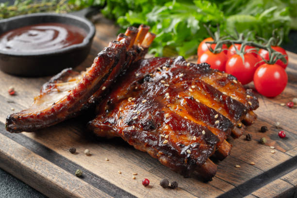

The Ultimate Recipe For Cooking Baby Back Ribs

Description
Have you ever just wanted to sit down with friends and family on a weekend and enjoy a good smoky stack of ribs?
Say less, because I have provided a recipe for you to follow and enjoy with your loved ones.
Ingredients
- 2 racks of baby back pork ribs
- 1/4 cup brown sugar
- 1 tablespoon smoked paprika
- 1 tablespoon chili powder
- 1 tablespoon garlic powder
- 1 tablespoon onion powder
- 1 teaspoon black pepper
- 1 teaspoon salt
- 1/2 teaspoon cayenne pepper (optional)
- 1 cup BBQ sauce
Steps to Follow
- Preheat your oven to 275°F (135°C).
- Remove the membrane from the back of the ribs.
- In a bowl, mix together the brown sugar, smoked paprika, chili powder, garlic powder, onion powder, black pepper, salt, and cayenne pepper.
- Rub the spice mixture all over the ribs.
- Wrap the ribs in aluminum foil and place them on a baking sheet.
- Bake in the preheated oven for 2.5 to 3 hours.
- Remove ribs from the oven and increase the oven temperature to 350°F (175°C).
- Brush BBQ sauce over the ribs.
- Return ribs to the oven, uncovered, and bake for an additional 30 minutes.
- Remove from the oven, let rest for 10 minutes, then cut and serve.